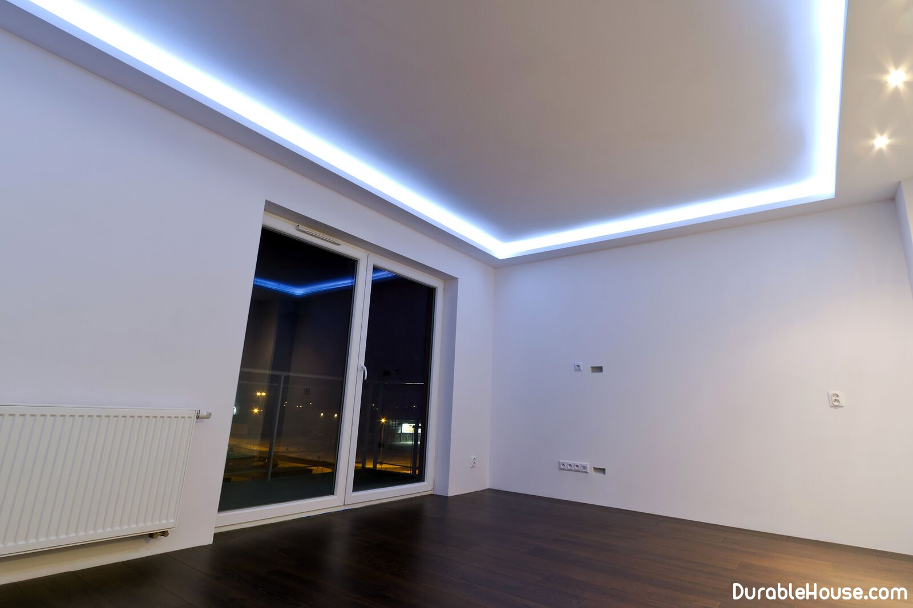

Plasterboard ceiling: installation
The wood has a significant influence of high humidity and the difference temperatures, so it can shrink or swell. And all this has a negative effect on ceiling in the house: between sheets of plasterboard, cracks will appear over time. In order not to it happened necessary to know some secrets of mounting and features of fixing sheets. With our you can make a smooth and beautiful ceiling in your wooden house, which will retain its appearance for many years.
Substrate preparation
It is not worthwhile to build a specially black construction for plastering it with plasterboard. If you are already long live in the house, but only now decided to refresh the repair, then, of course, use it it will be very convenient, and you will not have any difficulties with producing procedure for fixing plasterboard sheets to a wooden ceiling. But during construction new homes can be used beams overlap, which will perfectly cope with the function bases under the frame.
If among the many materials for a wooden house, which you can cover the ceiling, you chose drywall, then you will need to work:
- Sheets
- Metal profile UD and CD
- Hangers
- Connectors-crabs
- Connectors-crabs
- Screws TN 25
- Screwdriver
- Scissors for metal
- Plasterboard knife
- A hammer
- Drill
- Building level
- Tape measure and pencil
With gypsum boards you can make the ceiling in the house perfectly smooth. For this find the bottom point on the ceiling and draw a line on the wall at its level. Then, with the help of level, draw this line along the entire perimeter of the room. Such a markup will ideally smoothly install the frame with your own hands. But before installing the battens it is necessary to take care of about waterproofing. In the new house it is necessary to isolate the bearing beams, and in the already occupied one - rough ceiling.
Mounting of frame under gypsum board on a wooden ceiling
You can make a frame made of metal or wood. There will not be a significant difference. Anyway you will need to make a design that must have an independent mount from the walls. it will avoid deformation when shrinkage and shrinkage of the structure. In a wooden house make their own hands the crate for the ceiling is quite simple. You will need a metal profile or wooden bars with a section of 30x40 mm. Mount them must be perpendicular to the beams bases at a distance of 40 cm from each other. Such a distance is enough to reliably fix the sheets of drywall.
The metal ceiling profile is also perpendicular to the beams at a distance of 60 cm from each other. Then, a guide profile is inserted and fastened to its end faces. it does not attach itself to anything, and this ensures its independence and mobility when shrinking building. For fixing sheets of drywall you will also need special connectors - «Crabs». Now you know how to properly make ceilings in a wooden house so that in avoid the occurrence of cracks or fractures of plasterboard.
Electric wiring rules
A beautiful and even ceiling can be created only if, during installation, you take into account all nuances and comments, which were mentioned above. But do not forget also that excess wires do not paint the structure at all, so even before the installation of gypsum boards it is necessary to make the wiring. Often the laying of wires is already carried out after finishing the ceilings in the country or in the house.
It is necessary to decide in advance what lighting devices will be needed on the ceiling. After that the chandelier fixing points and additional luminaires are selected. To each of them are summed up wires that protect the corrugated tubes from moisture ingress. A correct calculation will allow you to forget about the external wiring visible to the eye. A similar rule applies when working with any materials. No matter what you want to trim the ceiling of your house in the country, it's important to build wiring before finishing.
Rules and secrets of mounting drywall
It seems that there is nothing easier than fixing sheets of gypsum board on rails or profiles. this work is really simple enough, but when you do it, you must follow the some rules that will in the future avoid disappointments from cracks or breaks drywall on a wooden ceiling. Try to lay the sheets in checkerboard order, make sure that the edge of the canvas is in the middle of the profile. So you can reliably fix each sheet. For this job you will need self-tapping screws and screwdrivers.
The optimum step for fixing the drywall to the frame is 15 cm. This distance will be enough to make the ceiling of the drywall in a wooden house smooth and sturdy. pay attention also to the fact that the head of the screw goes deeper into the sheet to a depth of 1-2 mm. For convenience use a special bit for drywall.
Even if the upper floor is the second floor, then the ceiling beams will not let the ceiling sag under the weight of furniture and floor. Many mistakenly believe that such a building material necessary reinforcement. However, this is just an extra waste of money. Correct frame and neat fixing drywall will be enough.
Final surface finish
After the installation of gypsum boards, it is necessary to carry out the final stage, which includes the putty and finishing the ceiling in a wooden house. If the joints between the sheets have turned out to be minimal, then it will be sufficient to apply the reinforcing tape and the subsequent putty. But for more confidence in the longevity of the ceiling, we advise you to do small work.
Use a carpenter's knife and sew seams so that the gap is 5 mm. Wherein the bevel angle of each plate should be 45 degrees. After that use the putty elastic type, top apply reinforcing tape. Do not forget about the extra layer putty over the tape. It will avoid cracks even when the house is strongly shrunk. After dry out the seams. Now your ceiling is ready for painting.
As you can see, there is nothing complicated in making a ceiling in a wooden house yourself. If you have experience in carrying out similar work, then share it in comments under the article.